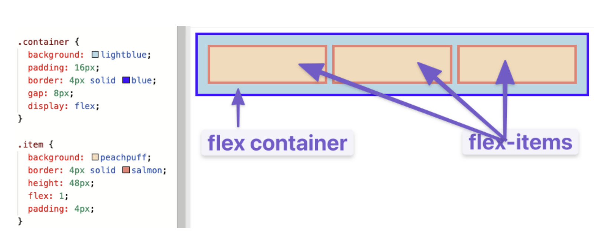
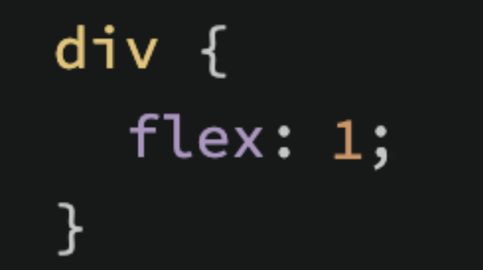

Flexbox is a relatively new way of manipulating elements in CSS of positioning elements.
Flexbox is a whole toolbox of properties to put things in there. Some properties belong on the flex containers, and other to the flex items.
A flex container is any element that has display: flex. And flex items is any element directly inside of a flex container. 
Any element can be both a flex container and a flex item, this is called 套娃 ("nesting"). Creating and nesting multiple flex containers and items is how we build complex layouts.
Let's check out this website which is very informative and cute!
flex is a shorthand for 3 properties: flex-grow, flex-shrink, and flex-basis.
Therefore, the above css is actually a abbreviated version of
flex-grow expects a single number as its value, which is like the flex-item's "growing factor." When we applied flex: 1, we were telling every div to grow the same amount. If we instead said flex: 2 to only one of the divs, then that div ________use the example below ________(grow to 2x of the others)
This is similar to flex-grow, but it only works if the size of all flex items is larger than their parent container. This means if the above 3 div classes are say 100px, 100px, and 200px, and the flex-container is 300px, THEN, it needs to shrink to fit the flex-container.
Default shrink is 1, but we can also change that.
One thing to note is that when the flex-container is big/wide enough, it does NOT need to shrink to fit, so it might not change. Like the above example might not work if we put it on the full screen.
flex-basis sets the initial size of a flex item, which defaults to 0%. The reason we set it to auto in the previous example is because when it's default (0), it will ignore the item's width and all would shrink evenly. Using auto as a flex-basis tells the item to check for a width declaration (width: 250px).
*flex: auto == flex: 1 1 auto